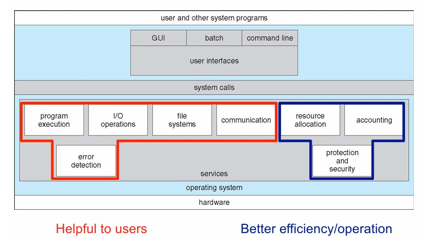
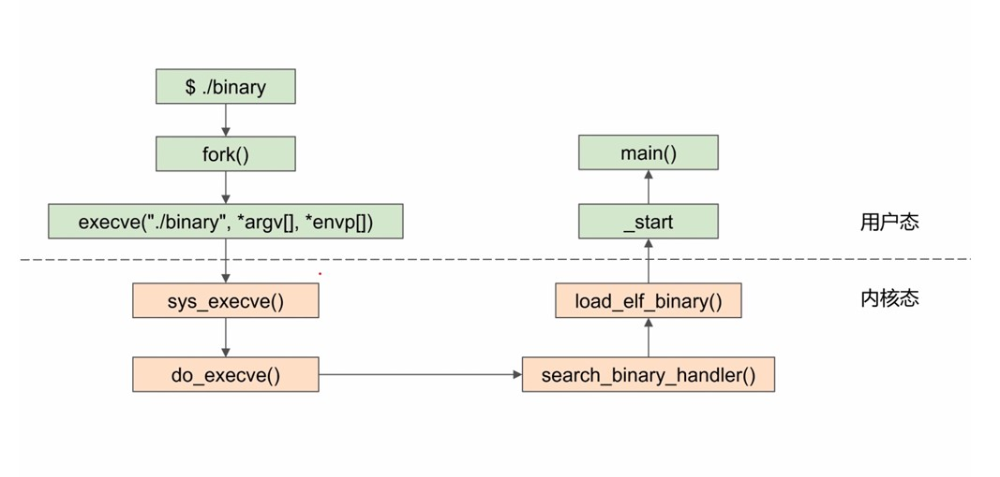
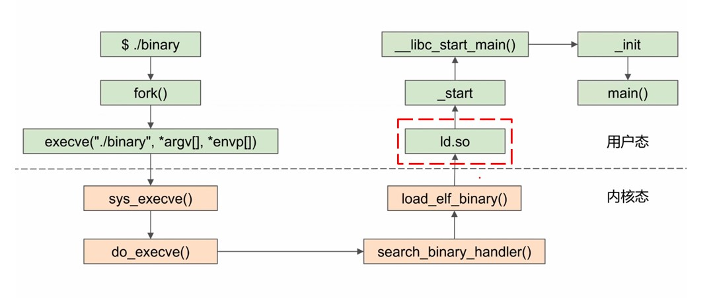
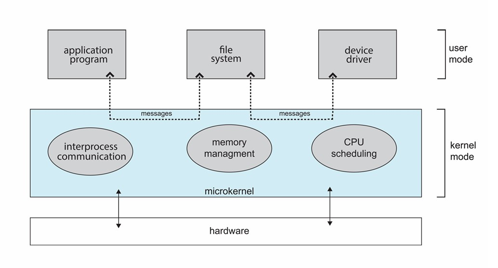

Chapter8 OS Structures
8.1 OS Services 操作系统服务

Helpful to users:
- program execution 程序执行
- I/O operations 输入/输出操作
- file systems 文件系统（提供文件抽象）
- communications 交互（内存共享，信息传递）
- error detection 错误检测
Better efficiency/operation:
- resource allocation 资源分配
- accounting 记账（统计用户的资源使用情况，可产生限制）
- protection and security 保护与安全
8.2 User and Operating System Interface 用户与操作系统的交互界面
- GUI 图形用户界面
- batch 批处理
- CLI 命令行
CLI 命令行：
CLI有时在内核中实现，有时通过系统程序实现。
命令分为内置（在命令解释器shell内部实现，如ls，cd等）和外置（系统中的可执行文件/外部程序，位于文件系统的某个位置，如gcc，python等），对于外置指令，添加新功能时不需要修改shell本身。
Definition
batch 批处理：
一种自动化执行一系列命令或任务的方法，通常通过脚本文件实现。
用户编写脚本，定义一组命令，这些命令按顺序自动执行，而无需用户交互。
8.3 System Calls 系统调用
操作系统提供给应用程序的最底层的接口，用于请求操作系统内核执行特定的服务或操作。
通常用高级语言编写（C/C++）。
被更高一层的API调用，而不是被直接调用。
Definition
API 应用程序接口：
应用程序之间交互的一组定义和协议，提供更高层次的抽象，使得应用程序不需要了解底层实现细节，只需使用定义好的接口来实现功能。
系统调用是最底层的接口，由操作系统内核直接提供，而 API 则可以是更高层次的接口，可能会调用多个系统调用以实现复杂的功能。
例如：open()，read()，write()，close()是syscall；
fopen()，fread()，fwrite()，fclose()是API。
syscall实例：
//vesion1:
# include<stdio.h>
int main()
{
printf("hello world\n");
}
//version2:
#include<unistd.h>
int main()
{
write(1,"hello world\n",13);
}
上面两段代码的功能完全一样，区别与要点在于：
- version1使用标准输入输出库
stdio.h，version2使用POSIX标准库unistd.h（POSIX是Linux的API） - version1的
printf函数是高级别的C标准库函数，version2的write函数是低级别的syscall，直接与kernel交互 write的第一个参数“1”表示文件描述符，“13”表示要写入的字符数
write的执行流：
首先，从main进入__libc_write；
然后，在__libc_write中使用syscall指令，在这之前会将系统调用号1传入%eax；
syscall指令会将控制权从用户转交给内核，即切换上下文，进入kernel_entry；
内核会调用write系统调用对应的handler进行处理，结束后调用ret_to_user，这个时候再次切换特权态，并进行上下文切换。
Note
syscall指令是x86-64的名称，在32-bit x86上为int $0x80，在arm64上为svc。

syscall number 系统调用号&syscall table 系统调用表：
syscall number是操作系统内核用于区分不同系统调用的一种数字标识。当应用程序发出一个系统调用请求时，它会将对应的系统调用号传递给内核，以告知内核需要执行的具体操作（通过查syscall table得到）。
系统调用号就是系统调用表的下标索引。
read:0write:1open:2close:3
事实上，操作系统接口的大部分细节通过API隐藏，具体通过run-time support library实现。
Definition
run-time support library 运行时支持库：
一组在程序运行时提供支持的函数库。这些库通常包含在编译器中，并在程序的执行期间被加载使用。
文件描述符：
操作系统用来标识和访问打开的文件或I/O资源的整数。
- 标准输入
stdin:0 - 标准输出
stdout:1 - 标准错误输出
stderr:2
strace命令：
strace用来展示程序在执行时需要调用的syscall种类和数量。
time命令：
time用来得到程序执行的时间。
- real time：总时间，即通俗意义上的耗时
- user time：在user mode下的时间
- system time：在kernel mode下的时间
理论上：real time = user time+system time
若real time < user time + system time，则是因为有并行执行（多核）；
若real time > user time + system time，则是因为有不算在user mode或kernel mode的卡顿的读取。
syscall的参数传递：
除了系统调用号，还有许多其他参数需要传递。
- 传值调用：将值放入寄存器，最简单，但有时参数数量多于寄存器
- 传引用调用：将指针地址放入寄存器
- 使用栈
后两者对参数的数量或者长度没有限制。
syscall的种类：
- Process control 进程控制
- File management 文件管理
- Device management 设备管理
- Information maintenance 信息维护
- Communications 交互
- Protection 保护
8.4 System Services 系统服务
上文提到的strace，time都属于System Services。
- File manipulation 新建、删除、复制、重命名等
- Status information 查询得到日志、debugging信息等
- Programming language support 如编译器、汇编器等
- Program loading and execution 绝对加载器、可重定位加载器、链接编辑器等
- Communications
- 网页浏览、远程登录、文件传输等
- Background services 服务、子系统、守护进程等
- Application programs 应用程序
8.5 Linkers and Loaders 链接器和加载器
Linker 链接器：
将多个目标文件和库文件链接在一起，生成最终的可执行文件。
注意，这个时候可执行文件暂时位于secondary storage 二级存储器（如硬盘等）。
Loader 加载器：
在程序执行时将可执行文件加载到内存中，并准备程序运行，在加载过程中，重定位会为程序的各个部分分配最终的地址，并调整代码和数据以匹配这些地址。
ELF 可执行与可链接格式：
是一种可执行、可链接的标准文件格式。
组成（section 节）：
- ELF header 文件头：包含ELF的基本信息，如文件类型，架构类型，程序头表和节头表的位置和大小等
- Program header table 程序头表：描述程序段的信息，指导loader加载进内存
- .text：存储可执行代码
- .rodata：存储只读数据
- .data：存储已初始化的可读写的数据
- .bss：存储未初始化的可读写的数据
- Section header table 节头表：描述各个节的信息，用于连接和重定位
Note
.bss单独分出来是为了节省空间。
静态链接与动态链接：
静态链接：在编译时将库的代码直接合并到可执行文件中。（可移植性好）
动态链接：在运行时将库文件加载到内存中，程序依赖这些外部库。（节约空间）
.interp节：
.interp是ELF文件中的一个特殊节，它保存了需要使用的动态链接器的路径。动态链接器负责在程序运行时加载和链接动态库。
静态链接的ELF没有.interp节，动态链接的ELF有.interp节。
memory layout 内存布局:
当我们要执行一个ELF时，我们会将其不同的section映射到如图所示的BSS segment, Data segment, Text segment处。对于动态链接，其动态库的文件等会被映射到Memory Mapping Segment，而静态链接没有这一映射。
对于静态链接的ELF，如果我们运行并使用strace查看调用syscall的情况，我们发现其调用了
-
execve：用于执行一个新的程序，用新的程序替换当前进程的内存映像。 -
brk：用于调整数据段的结束地址，从而改变进程的堆空间大小（分配内存） -
write
Note
- 将ELF映射到内存的是kernel（
execsyscall） - 初始化栈和堆的是kernel（
execsyscall） - 将动态库文件映射到内存的是loader
Note
exec是一组用于在操作系统中执行新程序的系统调用，它们使当前进程的地址空间被新程序替换。exec系列系统调用包括execl, execv, execle, execve等，每个都有略微不同的参数形式，但基本功能相同。
栈和堆：
-
操作系统中的栈和堆：栈用于存储函数调用的临时数据，包括局部变量、函数参数和返回地址；堆用于动态内存分配
-
数据结构中的栈和堆：用于特定算法和数据处理
ELF是如何开始被执行的：
系统调用execve后，通过一系列调用会来到load_elf_binary，通过检查elf_interpreter来判断动态/静态链接。
如果是静态链接，最后会调用start_thread，start_thread会使用entry point address（存放于ELF的header节）作为程序开始地址，即为_start入口点，是第一个在用户空间执行的代码，_start进入__libc_start_main，其会设置好环境与栈，最后会调用main。

如果是动态链接，在load_elf_binary中会被检查出来，于是传给start_thread的需要跳转的地址参数不同，并不像静态链接一样从start_thread跳到entry point address（_start），而是跳到ld.so（loader）作为程序开始地址。

8.6 Why Applications are Operating System Specific 为什么应用是OS对应的
在一个OS上能执行的App在其他OS上往往不能执行，因为不同的OS使用不同的syscall。
然而，以下情况不然：
- App使用解释型语言（如Python等），且有合适的interpreter
- App使用Java等跨平台语言，其在虚拟机（VM）上运行
- App使用标准语言（如C等），在不同的OS上分别编译运行
Note
ABI 应用程序二进制接口：
ABI（Application Binary Interface）和API（Application Programming Interface）都是用于定义软件组件之间交互的接口，但API定义的是源代码级别（上层）的接口，ABI定义的是二进制级别（底层）的接口。
8.7 Operating-System Design and Implementation OS设计与实现
设计理念：
对于用户： 方便学习使用，安全迅速
对于程序员： 方便设计维护，灵活有效
- Policy 策略： 做什么
- Mechanism 机制： 怎么做
核心理念：Separation of Policy from Mechanism 策略机制分离
Example
例如：Policy：选这门课的同学进这个教室
Mechanism1：锁与钥匙
如果改变Policy为：实验好的同学不需要来了，则需要向所有目标回收钥匙，但有很多突发情况，此时Policy和Mechanism相关性很强，并不是一个好方法
Mechanism2：刷脸
改变Policy时，Mechanism改变很方便，是一个好方法
实现：
早期OS用汇编语言实现； 中期OS用Algol，PL/1实现 当代OS用C，C++实现
事实上，OS有多种语言参与，低层级用汇编语言实现，主体用C实现，脚本用PERL，Python等实现。
更高层次的语言更易移植到其他硬件，但更慢。
通过仿真可以让OS在非原生硬件上运行。
Note
OS不能用Java写的原因：
OS需要直接与硬件交互，但Java是高级语言，依赖于虚拟机（JVM），其设计初衷是屏蔽底层硬件细节，提供跨平台能力。
8.8 Operating System Structure OS结构
- MS-DOS采用简单结构（Simple Structure）： 没有模块区分，不分user和kernel
- Unix，Linux采用单片结构（Monolithic）： 分为kernel和systems programs，集中服务
- 层次结构（Layered）
- Mach使用微内核结构（Microkernel）
单片结构：
Unix架构：

Linux架构：

层次结构：
层次结构下，OS分为多层，每一层建立在其低一层的基础之上，只使用比其低层的函数。最底层是硬件，最高层是用户界面。

微内核结构：
微内核结构将尽可能多的功能从内核移动到用户空间，用户模块之间通过message passing进行交流。
微内核结构的优点：
- 易扩展
- 易移植
- 更可靠
- 更安全
微内核结构的缺点：
- 内核与用户频繁切换的开销

LKM 可加载内核模块：
操作系统内核根据需要动态加载和卸载模块，与layer类似，但更加灵活。
特点：
- 面向对象
- 核心组件独立
- 通过已知接口进行通信
- 按需加载
Hybrid Systems 混杂系统：
操作系统并不是一直采取单一结构，而是多种结构的混杂。例如，Linux和Solaris内核基于单片结构，但也会使用LKM；Windows内核基于单片结构，但也会使用微内核。
8.9 Building and Booting an Operating System OS启动
从零开始生成OS：
- 编写OS
- 配置OS：需要根据OS将要运行的具体硬件系统进行配置，包括设置硬件参数、指定设备驱动程序、配置内存管理等
- 编译OS
- 安装OS：将OS的可执行文件载入硬盘等存储介质
- 启动OS
boot loader：
位于固定内存（ROM或EEPROM）的一段程序，用于初始化硬件、定位操作系统内核并将其加载到内存中启动。
有时启动分为两步，首先由ROM的代码加载位于固定位置的boot block，然后boot block加载boot loader。
boot loader通常允许进入各种启动状态，例如单用户模式。
8.10 Operating System Debugging OS调试
OS会生成包含错误信息的log文件。
- core dump文件： 应用出错，包含进程内存的信息
- crash dump文件： OS出错，包含内核内存的信息
performance tuning 性能优化：
通过减少bottleneck来优化性能。
- trace listing 链路追踪： 记录活动用于分析
- profiling 分析： 周期性采样指令指针来观察系统行为，寻找统计趋势。
相关指令与工具：
strace：追踪进程的系统调用- gdb
- perf：Linux上的性能分析工具
- tcpdump：命令行网络协议分析工具，捕获并检查网络中传输的数据包